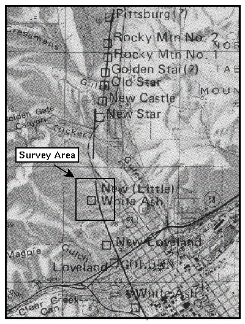

Coal Mining Activity Near Golden
Lenticular deposits of bituminous coal are located within the lower-most 200 feet of the LaramieFormation.  The figure to the right shows the locations of the known vertical coal mine shafts near the city of Golden. Coal was discovered near Golden in 1861. Demand on the mines increased in the 1870's and 1880's with the completion of the Colorado Central railroad from Denver to Golden and westward to Central City and Idaho Springs.
Within the survey area, one mine is known to have operated: The New White Ash Mine. This mine opened in 1890 and continued production for at least six years. Like the rest of the coal mines in the Denver Basin, the coal exploited in the New White Ash Mine is from the lower-most portion of the Laramie Formation. The dip of the beds in which the coal was deposited is nearly vertical and the beds strike almost north-south. Two seams were worked; both were about 4 feet wide, separated by about 32 feet, and were worked from the same shaft which cross-cut the beds at 173, 245, and 317 foot depths. Tunneling associated with the coal seams runs essentially north-south in the area of interest.
Additional information on coal-mining activities in and around Golden can be obtained at https://inside.mines.edu/fs_home/tboyd/Coal/.
All of the geologic information described on this page is derived from two sources
- USGS Professional Paper number 872, Geology of the Golden Quadrangle, Colorado, by R. Van Horn, 1976.
- USGS Monograph 27, Geology of the Denver Basin in Colorado, by S. F. Emmons, W. Cross, G. H. Eldridge, 1896.